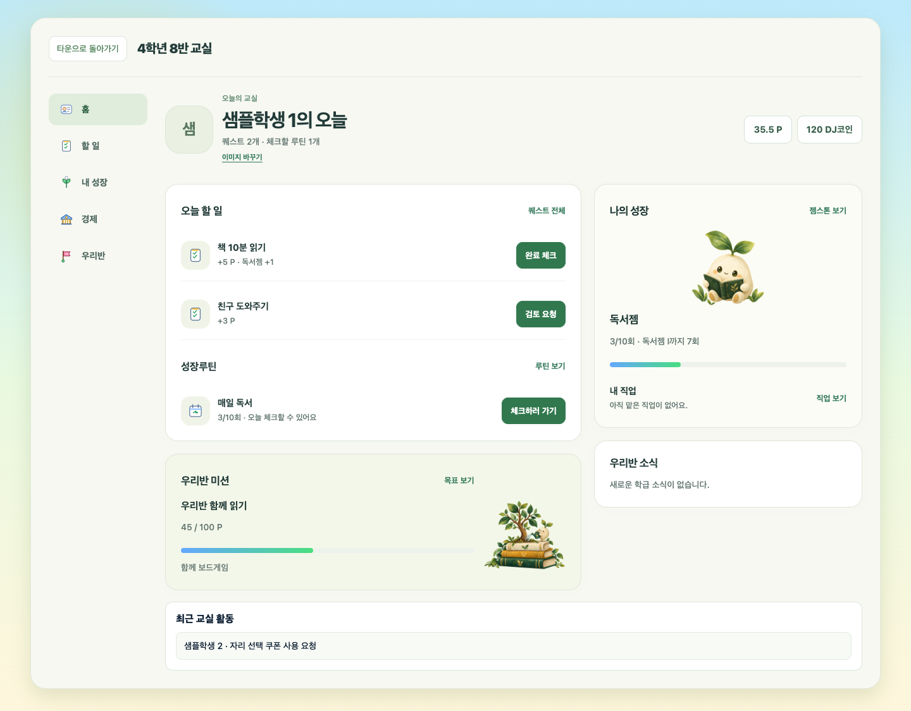
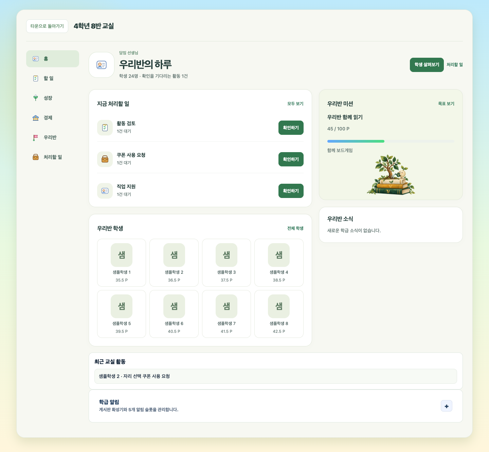
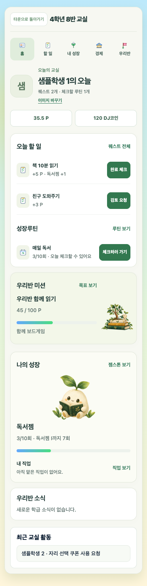

우리 교실, 오늘부터 차근차근
2026년 10월 4일 구현 화면입니다. 아래 이미지는 합성 계정으로 검증한 화면이며, 실제 학생 카드는 각자 선택한 사진 또는 마켓 아바타로 표시됩니다.
학생 홈
오늘 할 일, 성장루틴, 나의 성장, 학급 목표와 소식을 모았습니다. 본인 이미지 옆의 ‘이미지 바꾸기’에서 사진과 저장한 코디를 선택합니다.

교사 홈
처리할 요청과 학생 카드가 먼저 보입니다. 학생을 누르면 해당 카드의 상세 화면으로 이동합니다.

모바일
메뉴를 상단에 배치하고 오늘 할 일을 먼저 보여줍니다.
